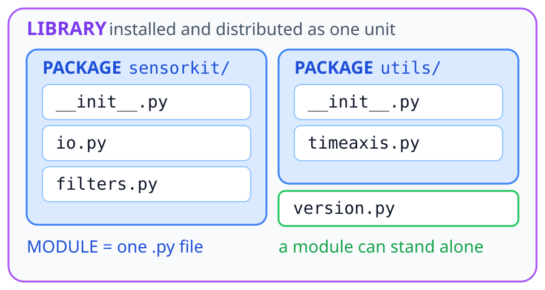

모듈과 패키지
모듈, 패키지, 라이브러리의 구분과 import 규칙
충북대학교 지능로봇공학과 문성태 교수
목차
모듈
- 구분 — 모듈, 패키지, 라이브러리
- import — 형태별 차이, 별표 금지
- 동작 — 탐색 경로, 캐시, 진입점
패키지
- 구조 — 디렉터리로 모듈 묶기
- __init__.py — 공개 이름 정하기
- 경로 — 절대 import 기본, 상대 import 함정
환경
- 표준 라이브러리 — 설치 없이 쓰는 범위
- pip — PyPI 에서 외부 패키지 설치
- 가상환경 — 프로젝트별 의존성 격리
정리
- 용어 — 모듈, 패키지, 라이브러리 구분
- 핵심 — 실무에서 지킬 규칙 다섯
- 다음 — Part 1-2 패키지 만들기
모듈, 패키지, 라이브러리
크기가 다른 같은 계열의 세 단위
- 모듈 — 함수, 클래스, 변수를 담은 .py 파일 하나
- 패키지 — 모듈을 담은 디렉터리, 이름에 계층이 생김
- 라이브러리 — 설치와 배포의 단위, 여러 패키지의 묶음
- 포함 관계 — 모듈 < 패키지 < 라이브러리
- 쓰는 법 — 셋 다 import 한 줄로 같음
경계는 느슨함

왜 필요한가
한 파일에 전부
- 탐색 비용 — 3000줄에서 함수 하나 찾기
- 이름 충돌 — 같은 이름이 서로를 덮음
- 영향 범위 불명 — 한 줄 수정에 어디가 깨질지 모름
- 테스트 불가 — 일부만 떼어낼 수 없음
- 협업 충돌 — 두 사람 동시 수정 불가
파일로 나눔
- 재사용 — 다른 프로젝트에 그대로
- 이름 공간 분리 — 파일마다 독립
- 변경 국소화 — 범위가 파일 하나
- 단위 테스트 — 기능 단위 검증
- 병렬 작업 — 파일별 분담
나누는 단위 = 모듈 — 문법이 아니라 파일과 디렉터리로 표현
모듈
확장자가 .py 인 파일 하나 = 모듈 하나
- 모듈 이름 — 확장자를 뗀 파일 이름
- 담는 것 — 함수, 클래스, 상수
- 표준 라이브러리 — 전부 모듈
- 선언 불필요 — 등록 절차 없음
파일 이름 = 이름 공간 — 이름 짓기가 설계의 시작
calc.py 모듈 이름: calc report.py 모듈 이름: report sensor_io.py 모듈 이름: sensor_io json.py 모듈 이름: json
모듈의 종류
출처는 셋, 쓰는 법은 하나
내장 모듈
- 출처 — 파이썬 설치에 포함
- 설치 — 불필요, 바로 import
- 예 — math, random, os, time
외부 모듈
- 출처 — PyPI 에 공개된 남의 코드
- 설치 — pip install 필요
- 예 — numpy, pandas, requests
사용자 모듈
- 출처 — 내가 만든 프로젝트 파일
- 설치 — 만들면 끝
- 예 — calc.py, sensor_io.py
import math # 내장, 설치 없이 import numpy as np # 외부, pip install numpy 뒤에 import calc # 사용자, 같은 폴더의 calc.py
첫 모듈
같은 디렉터리 — 설정 없이 바로 import
점 표기 — 모듈 이름 뒤에 점을 찍어 내부 이름 접근
# calc.py PI = 3.14159 def add(a, b): return a + b def circle_area(r): return PI * r * r
# main.py import calc print(calc.add(1, 2)) # 3 print(calc.circle_area(2)) # 12.56636 print(calc.PI) # 3.14159
import
import calc
기본형 — 항상 calc.add(1, 2). 출처 노출, 이름 충돌 없음
import numpy as np
별칭 — 긴 이름 축약. 관례 별칭만 (np, pd, plt)
from calc import add
직접 반입 — add(1, 2). 짧지만 출처 불명
from calc import *
금지 — 모든 공개 이름 반입. 다음 장에서 이유
from import *
from math import * from numpy import * sqrt(-1) # numpy 의 sqrt 가 승리: nan
import math import numpy as np np.sqrt(-1) # nan math.sqrt(-1) # ValueError
별표가 남기는 문제
- 이름 충돌 — 나중에 온 이름이 앞의 것을 덮음
- 출처 불명 — sqrt 가 어느 모듈 것인지 코드만으로 판별 불가
- 도구 무력화 — 자동완성과 정적 분석이 막힘
__all__ 이 필요한 이유
- 범위 한정 — 별표가 가져갈 이름을 목록으로 고정
- 유출 차단 — 목록이 없으면 그 모듈이 import 한 이름까지 유출
- 변경 자유 — 목록 밖 이름은 내부 구현, 자유롭게 변경
탐색 경로
import 한 줄 실행 시 파이썬이 훑는 순서
- 실행 중인 스크립트 디렉터리
- 환경변수 PYTHONPATH 경로
- 표준 라이브러리 디렉터리
- site-packages, pip 설치본
가장 흔한 사고
가림 — 현재 디렉터리가 1순위. 표준 라이브러리와 같은 파일명 금지
# 내 파일: random.py import random random.randint(1, 6) # AttributeError
모듈 캐시
- 1회 실행 — import 를 몇 번 써도 본문은 한 번
- 보관 위치 — sys.modules 딕셔너리
- 효과 — 순환 참조와 중복 초기화 방지
- 주의 — 최상단 무거운 작업은 첫 import 지연
노트북 수정 미반영 — 캐시 탓. reload 또는 커널 재시작
import sys import calc # 본문 1회 실행 import calc # 캐시에서 반환 print("calc" in sys.modules) # True
import calc import importlib importlib.reload(calc) # 수정본 재적재
__name__
모든 모듈이 가진 자기 이름, __name__
# calc.py print("모듈 이름:", __name__) def add(a, b): return a + b
- 직접 실행 — __main__, 이 파일이 프로그램의 시작점
- import — 파일 이름, 남에게 불려 온 부품
- 한 글자 차이 — 실행될 때만 도는 코드를 가르는 기준
$ python calc.py
모듈 이름: __main__
$ python -c "import calc" 모듈 이름: calc
진입점
- import 시 — 함수만 제공
- 직접 실행 시 — main 실행
- 용도 — 데모, 간단한 점검 코드 자리
- 빈도 — 파이썬에서 가장 흔한 관용구
가드 없으면 — import 하는 순간 프로그램 실행. 모듈은 부품, 프로그램이 아님
# calc.py def add(a, b): return a + b def main(): print(add(1, 2)) if __name__ == "__main__": main()
패키지
모듈이 파일이면, 패키지는 모듈을 담는 디렉터리
- 묶음 — 관련 모듈을 하나의 이름 아래로
- 계층 — 점으로 표현
- 서브패키지 — 디렉터리 안의 디렉터리
- 확장성 — 규모가 커져도 이름 충돌 없음
sensorkit/
├── __init__.py
├── io.py
└── filters/
├── __init__.py
└── moving_average.pyfrom sensorkit.filters import moving_average # 패키지 . 서브패키지 . 이름
__init__.py
- 표식 — 이 디렉터리는 패키지
- 실행 시점 — 패키지 import 시 가장 먼저
- 공개 API — 내부 모듈을 끌어올려 노출
- 보관 — 버전, 기본 설정
Python 3.3 이후 — 없어도 동작. 공개 API 를 정하려면 명시 권장
# sensorkit/__init__.py from .io import load_csv from .filters import moving_average __all__ = ["load_csv", "moving_average"] __version__ = "0.1.0"
import sensorkit sensorkit.load_csv("log.csv") # 내부 경로 몰라도 사용
디렉터리 구조
분리 기준 — 역할이 다르면 파일 분리. 한 디렉터리에 대여섯 개 초과 시 서브패키지
sensorkit/ ├── __init__.py ├── io.py ├── clean.py ├── filters/ │ ├── __init__.py │ ├── moving_average.py │ └── lowpass.py └── plot.py
| 모듈 | 역할 |
|---|---|
| io | 파일 읽기와 쓰기 |
| clean | 결측값, 이상치 처리 |
| filters | 신호 필터 모음 |
| plot | 시각화 헬퍼 |
절대 import
절대 경로, 권장
- 일관성 — 어디서 읽든 경로 동일
- 명시성 — 길지만 출처 분명
상대 경로
- 점 하나 — 현재 패키지, 둘은 상위
- 이름 독립 — 패키지명 변경에도 동작
# sensorkit/filters/lowpass.py from sensorkit.io import load_csv
# sensorkit/filters/lowpass.py from ..io import load_csv from .moving_average import moving_average
상대 import 함정
스크립트로 직접 실행하면 실패
- 원인 — 직접 실행된 파일의 이름은 __main__
- 결과 — 소속 패키지 상실, 점 표기 해석 불가
해결: -m 실행
실행 위치 — 패키지 바깥 디렉터리
$ python sensorkit/filters/lowpass.py ImportError: attempted relative import with no known parent package
$ python -m sensorkit.filters.lowpass표준 라이브러리
설치 불필요 — 바로 import. 새 패키지를 찾기 전에 먼저 확인
pip
- PyPI — 수십만 개의 공개 패키지
- requirements.txt — 팀 환경 공유
- 버전 고정 — 재현의 전제
== 정확히 그 버전, >= 그 이상. 협업에서는 정확한 고정
$ pip install numpy pandas $ pip list $ pip show numpy $ pip freeze > requirements.txt $ pip install -r requirements.txt
# requirements.txt numpy==2.1.0 pandas>=2.0,<3.0
가상환경
- 격리 — 프로젝트마다 독립된 패키지 공간
- 전역 보호 — 시스템 파이썬 무오염
- 공존 — A 는 numpy 1.x, B 는 2.x
- 표시 — 활성화 시 프롬프트에 이름
.venv 는 비공유 — .gitignore 등록. 저장소에는 requirements.txt 만
$ python -m venv .venv $ source .venv/bin/activate # Windows: .venv\Scripts\activate (.venv) $ pip install numpy (.venv) $ deactivate
용어
포함 관계 — 파일이 디렉터리에 담기고, 디렉터리가 설치 단위로 묶임
| 용어 | 실체 | 예 |
|---|---|---|
| 모듈 | .py 파일 하나 | calc.py, json |
| 패키지 | 모듈을 담은 디렉터리 | sensorkit, numpy |
| 라이브러리 | 설치와 배포의 단위 | numpy, Pandas |
정리
모듈
- 단위 — .py 파일 하나 = 이름 공간 하나
- import — 출처가 보이는 형태, 별표 금지
- 탐색 — sys.path 순서가 결과를 가름
- 진입점 — __name__ 으로 실행과 import 구분
패키지
- 단위 — 디렉터리가 모듈 묶음
- __init__.py — 공개 이름을 정하는 자리
- 경로 — 절대 import 를 기본으로
- 실행 — 패키지 안 코드는 python -m
환경
- 순서 — 표준 라이브러리부터 확인
- 설치 — pip 는 가상환경 안에서만
- 고정 — requirements.txt 로 버전 기록
- 격리 — 프로젝트마다 .venv 하나